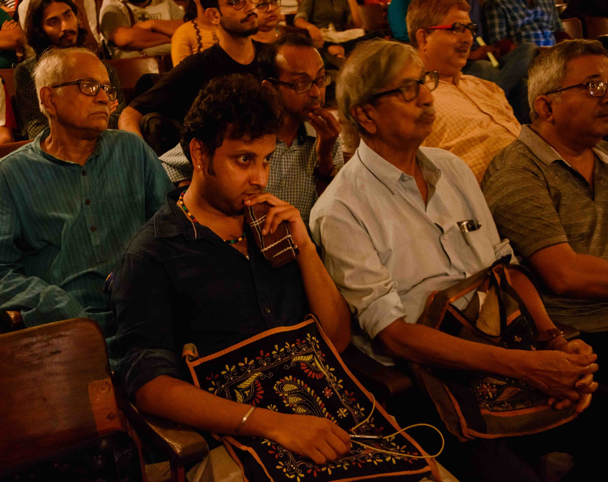

Jal Jangal Zameen Tales
Glimpses from the monthly film screening and conversation organised by People's Film Collective on 8th June, when we all got together to exchange notes on people's struggles over the commons' right to natural wealth, which reject the notion of private profit-driven mal-development leading to plunder of rivers, forests, lands, sea-coasts, cultures, societies, lives, livelihoods, and alternative worldviews.
Even as we are heading towards a catastrophic future for the planet and its species, popular resistance to this plunder is taking place at many scales. People of Odisha have been at the forefront of such resistance against brutal terror for much over a decade. In West Bengal too, in recent times, resilient resistance has build up for over a decade, which is still continuing to save the heritage trees of Jessore Road, the water-commons at Bhabadighi, the hills and rivers of Ayodhya Pahar, to name only a few.
We went over many of these inspiring movements and tried to connect the dots. Among the speakers were Subhendu Dasgupta, Bappa Bhuiya, Sourav Prakritibadi and Jaya Mitra. Subhendu Dasgupta spoke on lessons learnt from a few of the environment-focussed movements in Bengal in the past. Bappa Bhuiya spoke in details on the philosophy and strategies in the 'Save Jessore Road Trees' movement. Sourav elaborated on the movement ongoing at Ayodhya Pahar to stop the devastating closed loop dams over Turga and adjacent rivers and the proposed mass killing of trees. Jaya Mitra spoke of the connect between environment and human societies and histories, citing several examples. All the speakers as well as the moderator Akash connected the causal dots between corporate greed, State-corporate nexus and the devastation of ecologies, lives, livelihoods, histories and species.
The new documentary film, 'The Call of Khandadhar Hills' (directed by Tarun Mishra) and a recent short fiction film, 'The Waterfall' (directed by Lipika Singh Darai) were screened, followed by interaction with Tarun Mishra and Anindya Shankar Das. It was a revelation to watch the two films together. Both of them have been shot around the same location, in the forested hills, near the Khandadhar waterfall in the Sundergarh district of Odisha, where the Paudi Bhuinyas face threat to their environment and livelihood due to indiscriminate iron ore mining. The rivers Baitarani, Brahmani and ultimately the Mahanadi too are under the brunt of corporate-state plunder, along with age-old cultures, histories, memories and sustainable ecosystems of the people. As strict lines between fiction and documentary blur out, imagination of a different world becomes possible, through the words of wisdom of Mahasardar Bilua Naik who features in both the films, which look at the catastrophe from two different perspectives - that of the villagers, and that of the city folks.
Photograhy: Aniruddha Dey